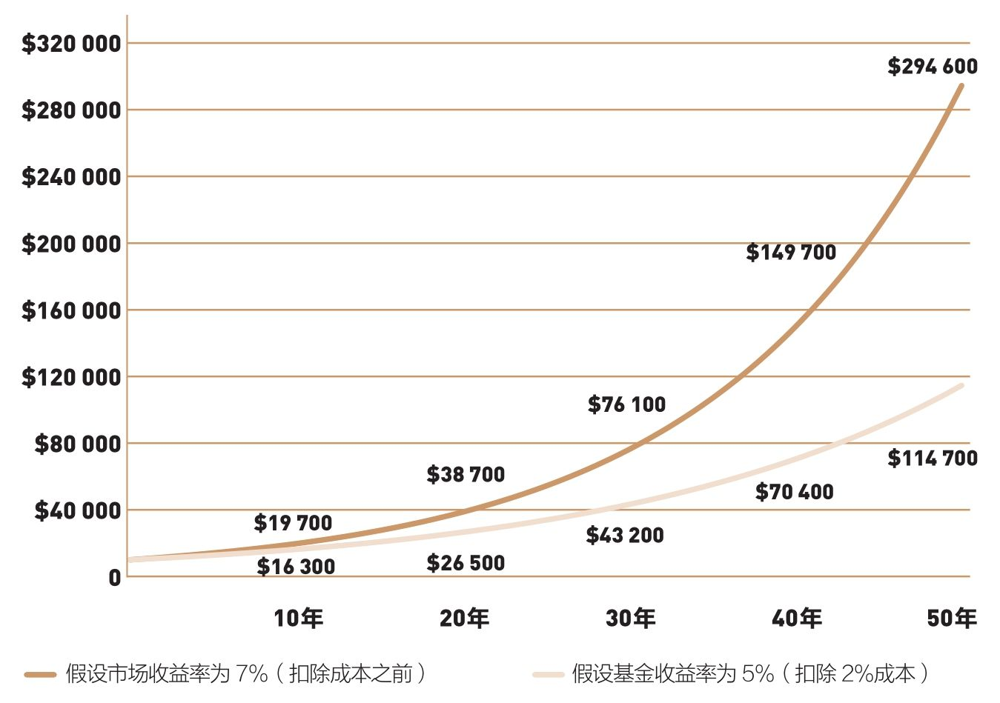
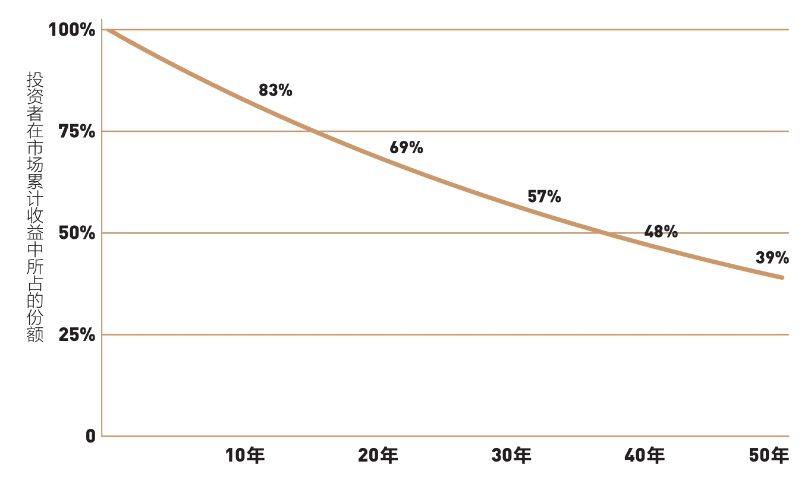

你绝不会相信1+1=5的谎言，但为什么会轻易相信付费给投资中介会让你的财富增加？
10 000元按复利计算本应获得294 600美元的投资收益，而实际结果却仅为114 700美元，其余的179 900美元跑到哪里去了？
在我们讨论指数投资的成功之道以前，还是先来深层次探究一下：为什么作为一个整体，投资者无法通过股利和收益增长获得企业创造的，并最终反映在股价上的企业利润。实际上，要理解其中的原因，我们只需懂得最简单的数学规则：作为一个集体，所有投资者的收益总和必定等于市场收益总和。但是请注意：这是扣除投资成本之前的情况。
一旦扣除了金融中介成本——五花八门的管理费、组合换手费、经纪人佣金、销售税、广告费、各种运营费，以及法律服务费，投资者的整体收益必然而且永远会低于市场收益总和，而其中的差值便是这些成本之和。这就是投资领域无可争辩的事实。
如果市场收益率在给定年份里是7%，作为一个整体，所有投资者就可以赚取7%的总收益率。不过这毫无意义，缴纳了金融中介费用后，口袋里剩余的钱才属于我们。（不管是盈利还是亏损，这些费用都逃不掉！）
在这里，有两点确定无疑：
◆扣除成本前，击败市场是一场零和博弈。
◆扣除成本后，击败市场是一场输家游戏。
投资者群体赚取的总收益必然要少于金融市场实现的总收益。这些成本到底有多少呢？对单个投资者来说，每年的交易成本相当于交易额的1.5%左右。交易次数较少的投资者，承担的中间成本也较低（1%左右），交易越频繁，中间成本就越大。换手率超过200%的投资者承担的中间成本约为3%。
在主动型股票共同基金中，管理费和运营费——两者统称为费率（expenses ratio）——每年平均大约为1.3%。按照基金资产加权后，大约为0.8%。然后，我们再加上另外0.5%的销售费。这是假设初始销售费为5%，平均到10年的结果。如果投资者仅持有5年，每年承担的费用就会增加一倍——也就是每年需要摊销1%（许多基金都有销售费，经常分摊到10年或更久，大约60%的基金是“免费”基金）。
但是，还有一大笔看不见的附加费用在等着你，所有这些费用对投资者来说有百害而无一利。我所说的是投资组合转手所带来的隐藏成本，这部分费用估计每年在1%左右。基金的年平均换手率大约在80%，这就意味着，一个资产规模为50亿美元的基金，每年都要买进20亿美元的股票，再卖出另外20亿美元的股票，共计交易40亿美元股票。按照上面提到的收费标准，经纪人佣金、买卖差价和市场影响成本，还有增加新基金时投资者需要承担的额外成本，综合起来是0.5%～1%。
最终的结局：拥有股票基金的“所有”成本每年可能达到2%～3% 。所以说，成本俨然就是一个主宰者。全体投资者的收益，正好是大家没有付出的部分。因此，被动的投资者反而成了赢家。这不过是常识。
几年前，在阅读哈佛大学法学院教授路易斯·布兰蒂斯（Louis Brandeis）的《别人的钱》（Other People's Money）一书时，我曾经看到一段话，这段话再生动不过地诠释了这个道理。作为美国最高法院历史上影响最大的法理学家之一，早在一个世纪前，布兰蒂斯就曾经严词指责控制美国投资界和美国企业的金融寡头。
谈到这些寡头们自我服务式的管理模式，以及他们相互勾结、利益共牵的实质，布兰蒂斯是这样描述的：“可以肆无忌惮践踏法律、人类和神灵，以一加一等于五的谎言欺骗着民众。”他预言，这个盛行的投机活动必将崩解（准确地说，他的预言最终都变成了现实），“在冷酷但公正的数学规则面前，它们将原形毕露”。然后，他补充了一句意味深长的警告[这句话应该出自古希腊戏剧家索福克勒斯（Sophocles）]：“哦，陌生人，请记住，数学是科学之父、安全之母。”
布兰蒂斯的话就像一记当头棒喝。为什么这样说呢？因为对投资而言，数学规则的冷酷与公正再明显不过（那些贬低我的人一直在说，我所主张的只不过是大家都懂的废话）。
但让人百思不得其解的是，大多数投资者似乎都难以认清摆在眼前的东西，哪怕是最浅显易懂的东西。或者更直白、更准确地说，他们是在拒绝现实，因为现实否定了他们心中根深蒂固的信念、偏见和过度自信，还有毫不怀疑地接受的金融市场长久以来的运作方式。
更重要的是，鼓励投资者和客户去认识这些显而易见的事实，也不符合金融中间人的利益。事实上，在这个金融体系中，自私自利的人更多是在强迫人们忽视这些规律。正如美国作家厄普顿·辛克莱（Upton Sinclair）所言：“当一个人可以因为不了解而赚钱，那了解这件事对他来说将变得难如登天。”
在我们这个金融体系中，中间业务为那些管理他人资产的人带来了无数财富。他们的自利倾向不可能在短时间内改变。但作为投资者，我们必须看管好自己的财富。只要能正视眼前现实，任何一个不缺少理性的投资者都会成功。
市场中介成本的影响到底有多大呢？太大了！实际上，长时间以来，股票基金的收益率一直落后于市场平均收益率，其中最重要的原因就是居高不下的成本。既然如此，为什么不想想其他办法呢？
总体上看，这些基金经理聪明绝顶，接受过高等教育，知识渊博，且为人可信。但是，他们不得不相互竞争。当某一方买入股票时，必定有人在卖出股票。就整体而言，这样的交易行为不会带来收益，只会带来交易成本。这些交易成本都会流入巴菲特在本书第1章里所说的那些帮手的口袋中。
投资者太过轻视投资成本，尤其是以下3个原因，更促使他们低估这些成本的重要性：
◆股票市场的收益率一直保持在较高水平（1980年过后，股票市场的平均年收益率达到11.5%，而基金的回报率看起来也不错，达到10.1%）。
◆投资者在关注短期收益时，忽视了交易成本在整个投资期内产生的流出效应。
◆很多此类成本是隐性的（投资组合交易成本、手续费变动，以及不必要的资本利得带来的税金等）。
具体事例或许更能说明问题。假设在过去半个世纪，股票市场年均收益率为7%。是的，半个世纪看起来有点长，但人一生的投资期间更长——如果一个投资者在22岁参加工作，他的投资期间可能长达65～70年；然后，我们再假设，共同基金每年至少产生2%的成本。最终的投资结果是基金的年均净回报率就剩下5%。
按照这些假设，我们看一下10 000美元在50年后能赚到多少钱（见图4-1）。假设名义年均收益率是7%，单纯投资股票市场，这笔投资将会增加到294 600美元，这就是长期投资的复利效应。

图4-1 神奇的复利效应与高昂的复利成本：10 000美元的初始投资在50年内的增长趋势
看看图4-1的两条收益曲线。5%和7%的差距在最初几年看起来并不大。然而，这两条收益曲线逐渐分离，最终有了天壤之别。50年后，基金的累计价值只有114 700美元，比市场的累计回报少了179 900美元。为什么？原因就是复利效应造成的巨大成本。
在投资领域，时间并不会为任何人治愈任何创伤，有时候反而会在伤口上撒盐。谈到报酬，时间是你的成本，但是一旦考虑到成本，时间就成了你的敌人。如果我们看一下这10 000美元投资的价值如何被时间所吞噬，就能够更清晰地认识到这一点（见图4-2）。

图4-2 残酷的复利效应：收益率落后于市场2%的长期后果
第1年年底，资产的潜在价值仅消失了2%左右（10 700美元和10 500美元）。到了第10年，流失的价值为17%（19 700美元和16 300美元）。到了第30年，流失的价值为43%（76 100美元和43 200美元）。到50年投资期结束时，在通过持有市场组合积累起来的收益中，有将近61%被成本所吞噬，投资者只得到了39%。
在这个例子里，投资者投入了100%的资本，承担了100%的风险，却只拿到少于40%的潜在收益。而金融中介机构不需要拿出一分钱，也不承担任何风险，却可以把60%以上的市场收益收入囊中。从这个例子中可以看到，长期来看，复利收益注定敌不过复利成本，我希望你永远不要忘记这一点！另外，还要牢记我们此前论述的：冷酷但公正的数学规则。
简单来说，基金经理稳坐投资食物链的顶端，侵吞了金融市场创造的收益，而处在食物链底端的投资者，就只能忍受不合理的剩余收益。事实上，投资者根本就不必承担这些成本，因为他们本可以投资一只跟踪标准普尔500指数的指数基金。
总之，依据投资中最简单的数学规则，这些成本合乎逻辑且无法回避，它们自始至终吞噬着共同基金投资者的收益。按照布兰蒂斯大法官的说法，我们的共同基金经理似乎已经被幻觉迷惑，然后又煞有介事地为投资者编织同样的幻想。
基金销售人员总是宣称，1900年以来股票市场年均收益率是9.5%，却绝口不提2%的基金费用和3%的通货膨胀率，刻意误导投资者，让他们以为真能获得9.5%的收益。显而易见，任何人都知道，这绝对是天方夜谭。各位只需要自行计算，就能明白一切：投资者的实际收益只有4.5%。
除非基金行业有所转变，采取措施提高基金持有者的收益，否则，它只能在停滞与徘徊中走向衰亡，成为冷酷但公正的数学规则的牺牲品。假如布兰蒂斯看到你在读这本书的话，他肯定会警告各位：“哦，我亲爱的读者，请记住，数学是科学之父、安全之母。”
投资的成败取决于成本的高低！所以说，各位一定要准备好笔，认真算一算。你一定要认识到，没有必要去参与这场绝大多数个人投资者及共同基金股东热衷的游戏，陷入疯狂的股票交易无法自拔。市场上存在低成本的指数基金，能保证投资者获得企业经营收益带来的合理报酬。
指数基金的优势已经得到很多共同基金业内人士的认同（尽管可能并不情愿）。彼得·林奇（Peter Lynch）是富达麦哲伦基金（Fidelity Magellan Fund）的传奇经理人，曾在1977—1990年管理该基金，取得了惊人的业绩。然而，即便是这样一位业绩超群的投资大师，在退休时也不得不对《巴伦周刊》（Barron’s）杂志说：“标准普尔500指数在10年内增长了343.8%，可普通股票基金只增长了283%。因此，专业投资人士的介入，反而让绩效变少了。大众投资指数基金应该会更好。”
我们再来听听基金行业的领袖人物乔恩·福塞（Jon Fossel）的说法。他曾担任投资公司学会（Investment Company Institute）和奥本海默基金（Oppenheimer Funds）的董事长。他在《华尔街日报》（Wall Street Journal）上表示：“人们应该认识到基金的平均收益，绝不可能超过整体市场。”
即使是那些活跃的投资者，似乎也认可指数投资策略。让我们听听詹姆斯·克拉默（James Cramer）的说法。他是基金经理人，也经常主持全国有线广播公司（CNBC）《疯狂货币》（Mad Money）这一节目。他说：“在干了一辈子挑选股票的行当后，我必须承认，博格所主张的指数基金最终促使我准备和他站在一起，而不是去打败他。对于任何想在如此疯狂的股票市场有所斩获的投资者……博格的智慧和常识都不可或缺。”
甚至对冲基金经理也加入了这个行列。克利福德·阿斯尼斯（Clifford Asness）是AQR资本管理公司（AQR Capital Nanagement）创始人和常务董事长，把自己的智慧、才干和正直融入指数基金中：“以市场大盘为基础的指数投资，将凭借其独有的优势，成为投资领域的王者。这是大家理论上都应该持有的投资，它的低成本为投资者带来丰厚的收益。”